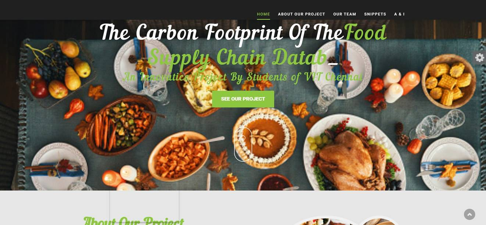

Collaborative robot acting as scrub nurse for cataract surgery (CRASCS)
Customized Collaborative autonomous 5 DOF robot is built to assist in cataract surgery by identify surgical
phases and surgical tools respectively and placing them appropriately in surgical tray in real time. This system is
also combined with voice command model to assist surgeon’s in-between cataract surgery phases. This project has been published in Journal of Robotic surgery, Springer Link
and featured in National institute of health page. Click below to learn more about my project

Real-time soil moisture prediction for building construction
Multiple sensors has been used assess soil conditions at construction sites. Through continuous monitoring and
leveraging a deep learning model, the system predicts the time required for soil to attain the desired moisture
level. This predictive capability facilitates the establishment of a robust foundation for building construction. This project has been presented
in International Virtual Conference on Intelligent Robotics, Mechatronics, and Automation Systems
(IRMAS 2023)

Autonomous Troop Identifying Robot with Simulated Targeting Arm
This project combines computer vision with robotics to automate detection and targeting in a simulated military environment. Using a YOLO v5 model for real-time person detection, the system identifies enemy troops in an image. Once detected,
a simulated Baxter robot in pybullet simulation is instructed to aim at these targets.

Mechannum wheel robot
This project is about a mechannum wheel robot, equipped with 3 DOF robotic arm with ultrasonic sensor and act as a rover in space missions. It can be controlled
via mobile application and bluetooth module.
Artificial Intelligence-Based Voice Assistant
In this project, we developed a voice assistant capable of accurately understanding user commands. You can learn more about this project from the slides below

Carbon Footprint Of The Food Supply Chain Database
We created database that stores the food items along with their greenhouse emission levels.
A warning indicator is one of the implementations made to create an idea of relative emissions using colour coding basically to create an image of the excessive level in the mind of the user.
This primarily helps the user to optimize his/her diet accordingly.


{kind=link}